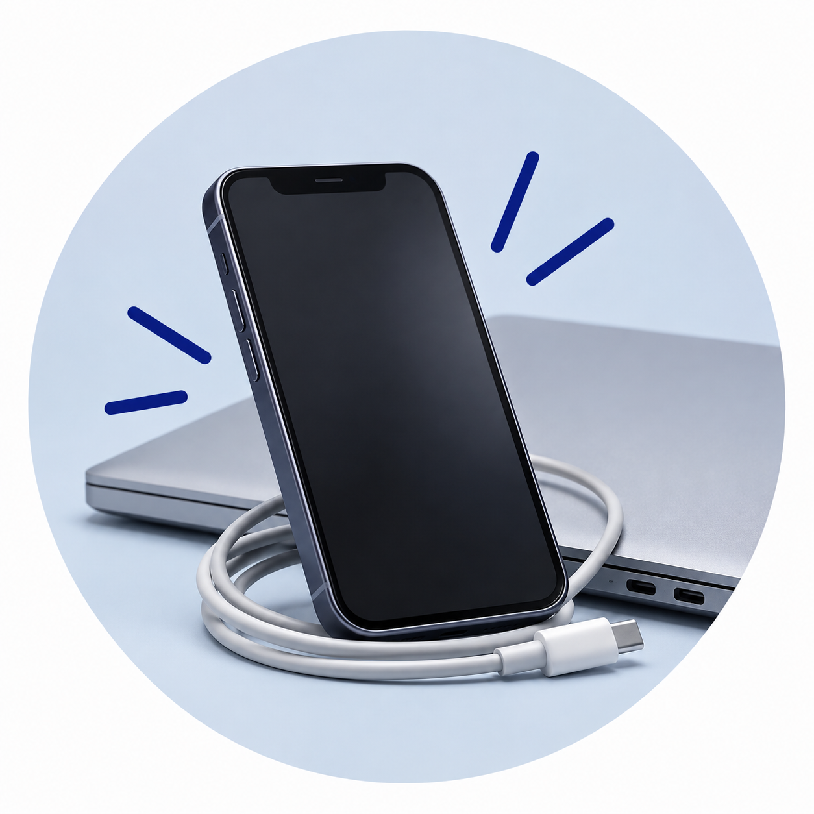
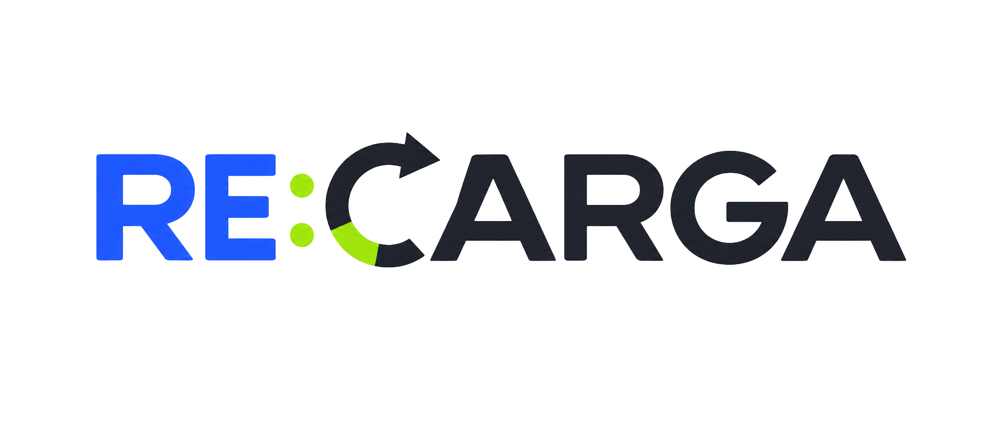
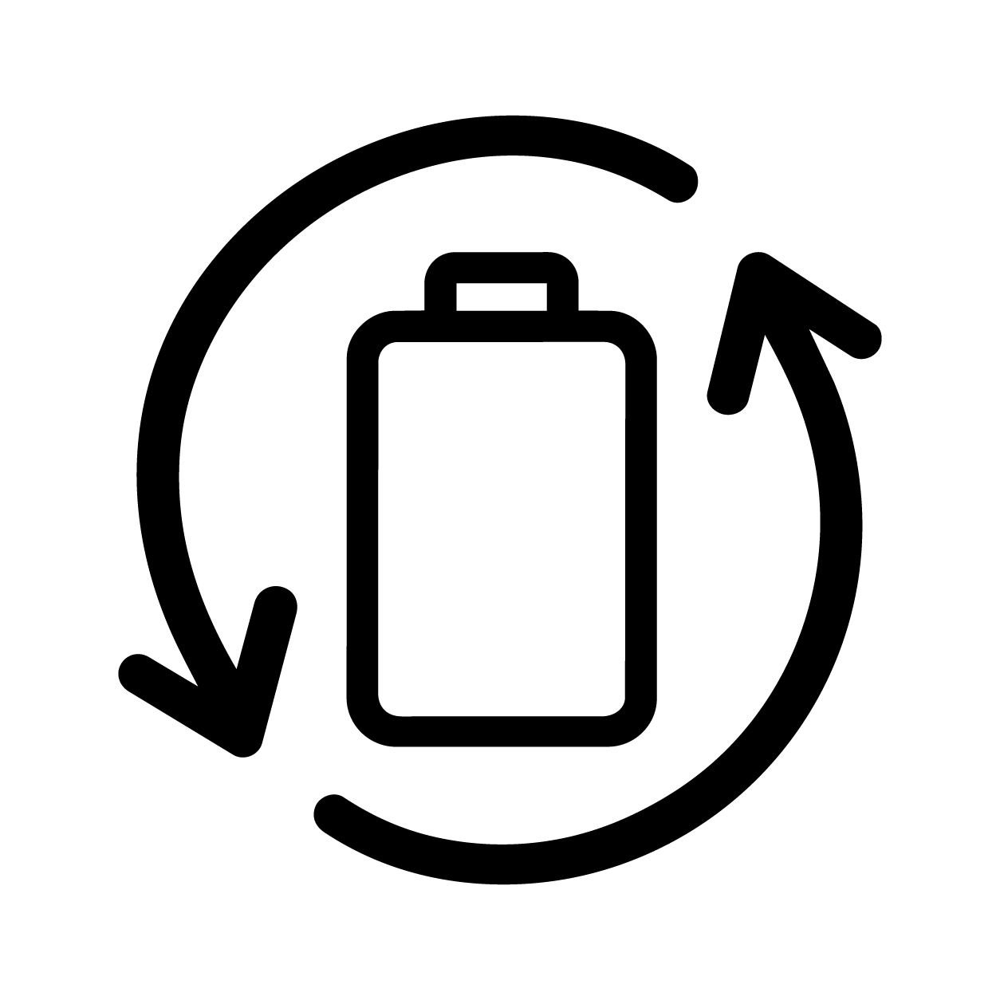
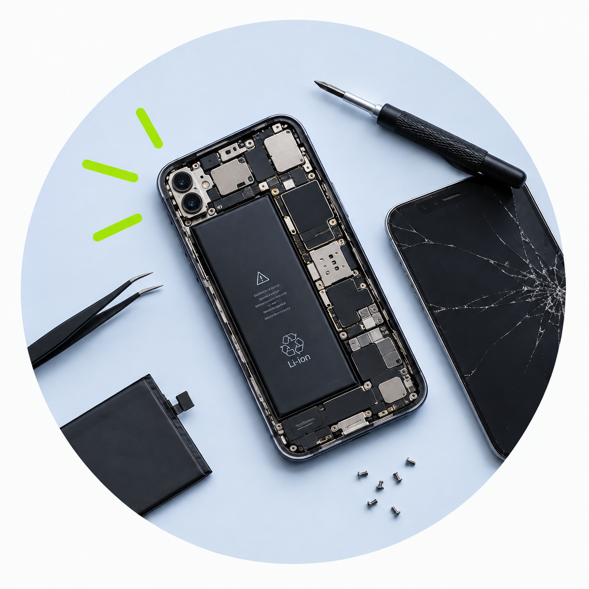
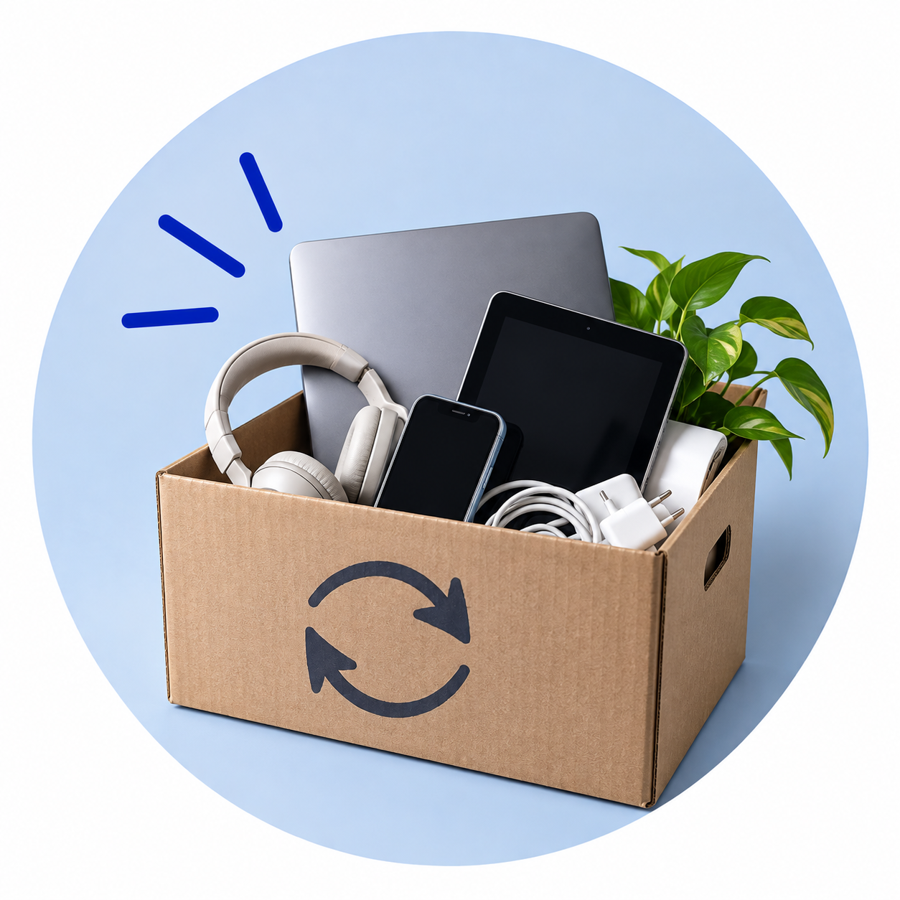
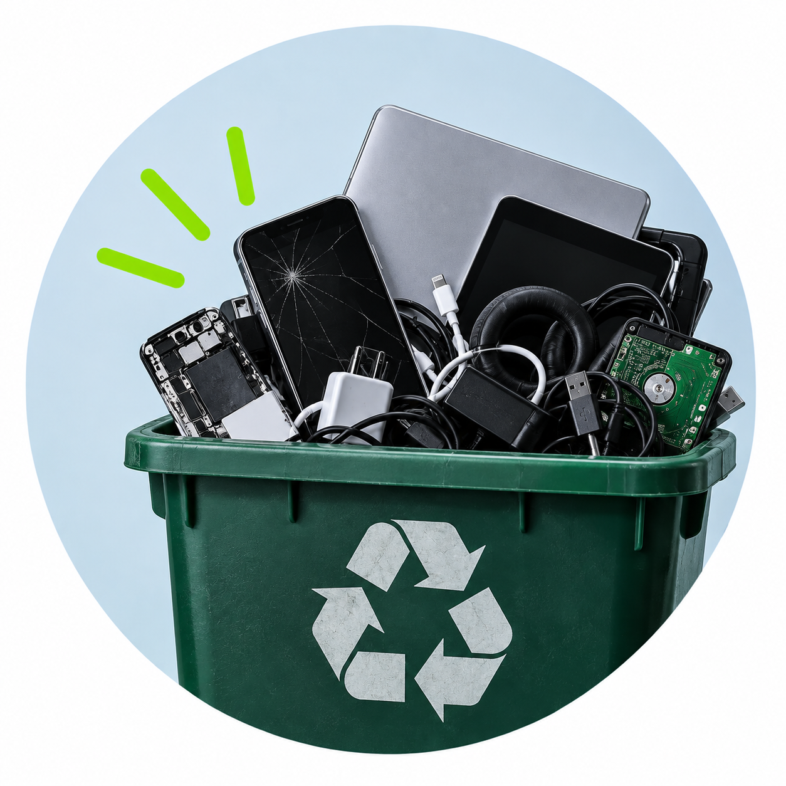
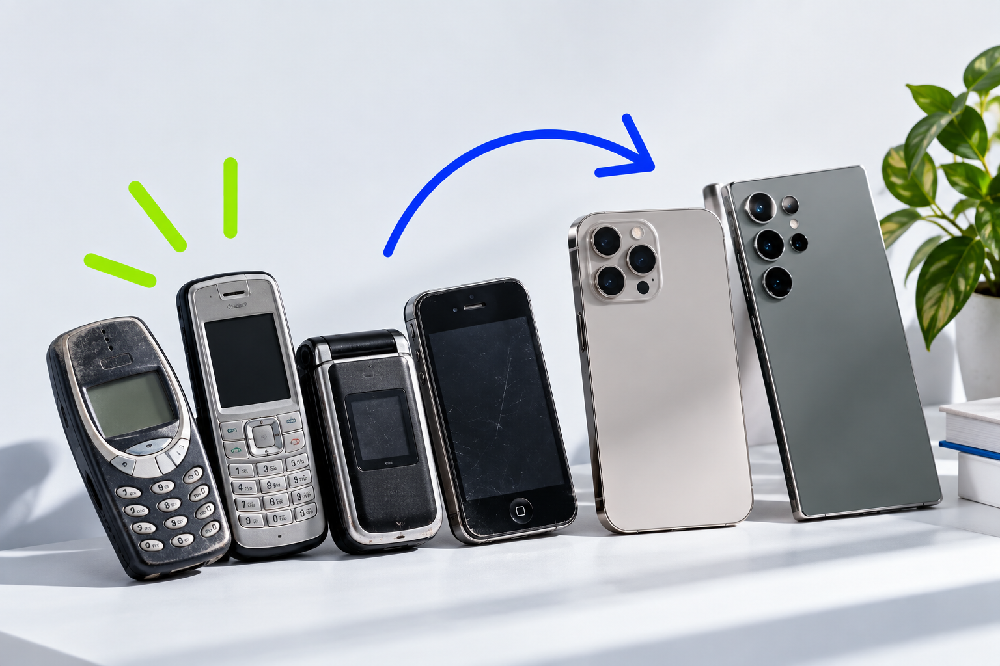
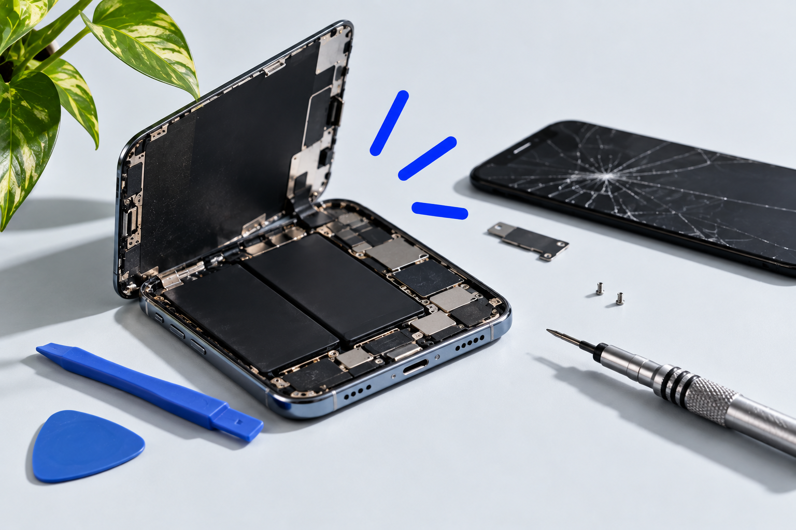
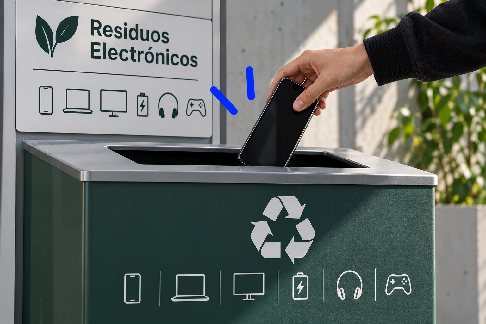

Usalo más
Alargar la vida de tus dispositivos reduce la necesidad de producir y desechar nuevos equipos.


Tecnología consciente

Alargar la vida de tus dispositivos reduce la necesidad de producir y desechar nuevos equipos.

Una batería, una pantalla o una pieza dañada no siempre significan el final de un dispositivo.

Lo que ya no usás puede venderse, donarse o tener una segunda vida en otras manos.

Cuando un equipo realmente llega al final de su vida útil, descartarlo correctamente hace la diferencia.
Pensalo diferente
No siempre necesitás comprar otro dispositivo. Reparar, reutilizar o darle una segunda vida también es una forma de avanzar.

PensaloAntes de cambiar
Cambiar de celular, computadora o tablet se volvió algo habitual, incluso cuando todavía funciona. Antes de reemplazarlo, preguntate si realmente dejó de servir o si apareció una opción más nueva.
Conocé más
Una falla no siempre requiere un equipo nuevo. Evaluar una reparación puede extender su vida útil.
ExplorarVender, donar o comprar reacondicionado permite que un dispositivo siga siendo útil por más tiempo.
Descubrir
Los dispositivos electrónicos no deberían terminar junto con los residuos comunes. Conocé cómo desecharlos correctamente.
Aprender